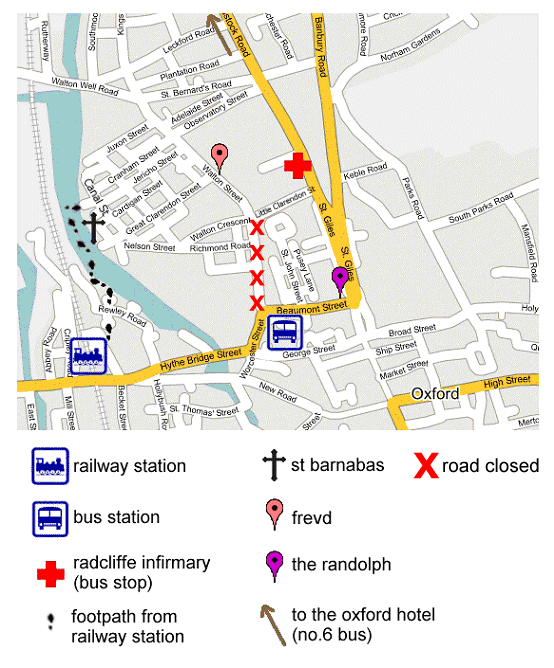

|
peachjuice dot net is a space for the exclusive
use of those that know how to enter it.
| |||||
|
You're in...
...Getting How to Get thereSt Barnabas Church and Frevd are both in Jericho, Oxford,within easy walking distance of each other. Parking anywhere in Oxford is extremely difficult and we would recommend you use public transport to get to the wedding if possible (we are within 15 minutes walk of the train and bus stations). If you do need to drivewe would recommend using Oxford's Park & Ride services (http://www.parkandride.net/detect_oxford.html). Pear Treeif coming from the north, Redbridge if coming from the south, and in both cases, alight at the Radcliffe Infirmary. BusFrom the Oxford Hotel you can take the no.6 bus and alight atthe Radcliffe Infirmary. TaxiIf you prefer to take a taxi from your hotel (or from the Park &Ride) we would recommend 001 Taxis on 01865 240000. UPDATED MAP WITH ROAD CLOSURENote that the footpath from the railway station doesn't actually require you to walk on water! There is a central island along the canal. On leaving the main station building, the footpath begins over to your left (just beyond the ramp up to the car park). Follow it round to the right and then take the cut through to the left (into Rewley Road). Go straight across and you should come out on the canal. Cross the (road) bridge across the first spur of the canal, then follow the path down (past Snake Island nature conservation area on your right) to cross the footbridge. You come out at the winding hole, from where you can see the church just further up the canal on the other side. Follow the path up to the next bridge (which has a blackboard advertising The Bookbinders pub). Cross here to reach Canal Street. love, Peter and Charlie. | |||||